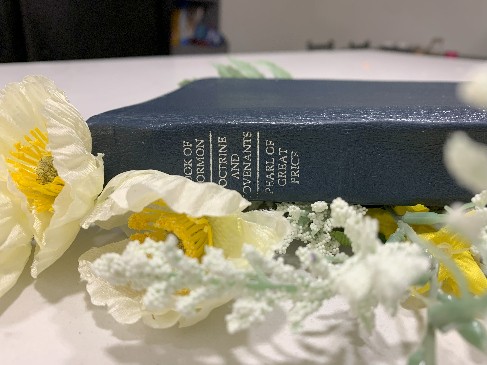

Enjoy this page that demonstrates various ways about how you can find Christ in everyday life.
Living Water
I’m grateful for water and its symbol of cleanliness and renewal
Christ uses water as a symbol of His blood and overcoming death
The water Christ offers us is living water such that we will never thirst
Animals
I’m grateful for the animals on the earth and that each animal was created intentionally. This dog has a story, he’s not just a pet, but a small Yorkie with a big task. As a service animal, he supports his owner, reminding me of the intricacies and beauty of the creation of animals representing Christ’s compassion
God's Children
A group of YSA saints gathered together to watch General Conference. Their faith is inspiring and through them, I see that Christ can work through imperfect people who are willing to try
My friend, Truman. He is an example and inspiration to myself and others. His compassion and charity helps me see Christ working through Him
Mountains
Each new day, with the rising sun, grants a new opportunity to be 1% better. I’m grateful for Christ’s atonement that enables me to try again every day
In olden times, mountains represented the temple, a place of reflection and communication with God. A place to receive revelation
I’m grateful for mountains and the grandeur and power of them to remind me of Christ’s majesty
Nature
Flowers don’t start out beautiful, they undergo a process that endures cold winters before transforming.
Christ is aware of even the smallest things and everything is accounted for. All of His creations are equally valued.
The path of life is not straight, it has twists and turns but Christ has made it so we can always move forward.
Scriptures

I’m so grateful for the scriptures. I love the Spirit I feel when I read them. I feel Christ’s love through the scriptures. Even when I turn away, Christ is always so willing to bless me with His Spirit after I read the scriptures.
These are the words for Christ and the bread of life, I’m grateful for the opportunity to never hunger again.
Look Up Challenge
This video is for a separate project, but since it is for a religion class I figured I would add it here. In this video, I spend the 30 days applying President Reese's advice to look up from our phones and look around at each other and look up to God.